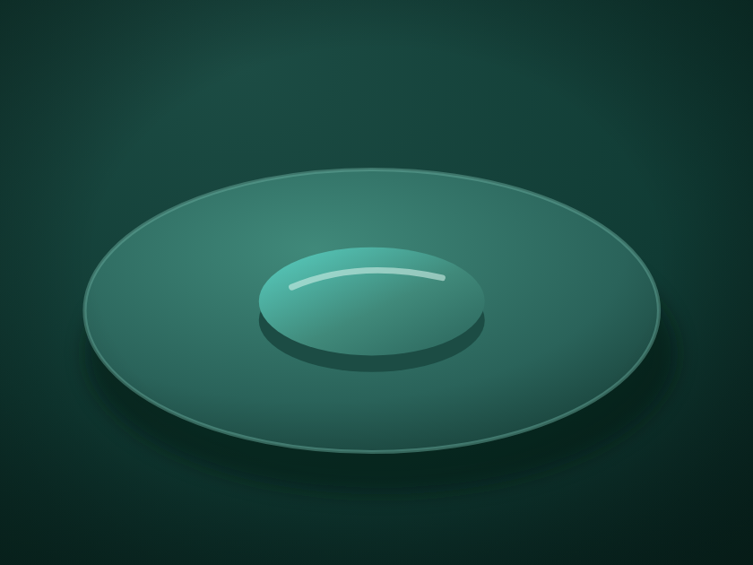
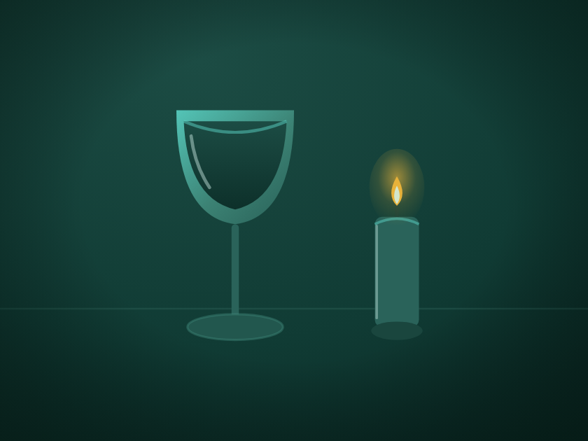
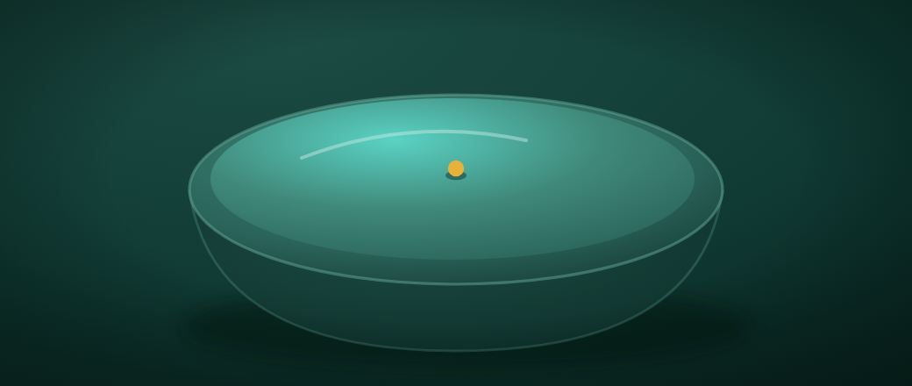
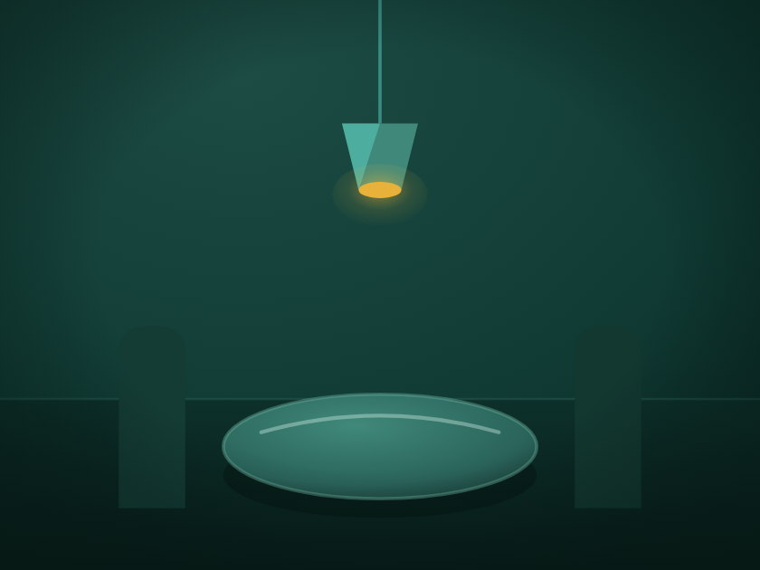

fish · le héros
7,5/10Le poisson v2/r1, affiné : une silhouette unique, nette, un aileron balayé, une seule fourchette, l'œil réduit à un point teal + éclat. Fidèle au look que vous vouliez, en plus soigné.
Ouvrir le SVG →Laboratoire · expérience
Reprise de l'expérience, cette fois avec la bonne cible : non pas le réalisme, mais un duotone poli et sobre, sur la palette de la marque — le « look » du poisson v2/r1. La boucle note ici la tenue (polish, sobriété, palette, clarté, élégance, cohésion), et pénalise la surcharge. Chaque tour retire des éléments plutôt que d'en ajouter.
Le constat : la note monte à 7,5/10 — nettement au-dessus du run « réalisme » (6,0), et ce malgré un barème plus sévère. C'est la direction alignée sur la marque : cohérente, minimale, entièrement en teal + une seule note ambre par image. Un vrai jeu d'illustrations utilisable.
Trajectoire : 5,8 → 6,2 → 6,6 → 7,0 (run 1) → 7,0 → 7,5 (run 2, + retouche « salle »). Les tours plus chargés ont été rejetés par la boucle.
Le poisson v2/r1, affiné : une silhouette unique, nette, un aileron balayé, une seule fourchette, l'œil réduit à un point teal + éclat. Fidèle au look que vous vouliez, en plus soigné.
Ouvrir le SVG →
La plus réussie : une assiette et un dôme, deux plans de valeur, un éclat. Sobriété pure.
Ouvrir le SVG →
Verre de vin et bougie, un filet de lumière commun. Élégant, calme, la note ambre unique de l'ensemble avec la salle.
Ouvrir le SVG →
Un bol profond, une crête de nourriture, une note ambre. Lisible et net.
Ouvrir le SVG →
La plus faible : suspension, table éclairée à la bougie, deux dossiers de chaise ajoutés pour qu'elle se lise comme une salle. Encore un peu clairsemée.
Ouvrir le SVG →